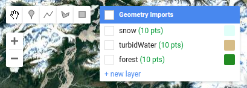
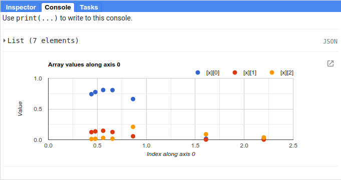

spectral signatures
Contents
spectral signatures#
This tutorial is designed to have you use Google Earth Engine (GEE) to examine the spectral signatures of different surfaces. After finishing this tutorial, you should be able to:
import geometries into your script
extract values from an image using a FeatureCollection
plot properties extracted from a FeatureCollection
set custom chart properties and options
export the data plotted in a chart to a CSV
use spectral signatures to investigate differences in spectral signatures for different surface types
importing geometries#
In the previous tutorial, we used the Inspector tab to look at band values for different points by clicking on the map:

While useful, this is also limited - we can only do this for one point at a time, the value depends
at least in part by the zoom level of the Map window, and if we want to save the data for later
analysis, we have to do it every single time we click on a new point.
In this tutorial, we’ll see how we can use a number of different tools in GEE to plot data and also export it for later analysis.
To get started, look at the top of the script. You should see the following:

These are the Imports for the script - in addition to the geometries shown here, you can also
import Assets (files uploaded to GEE), Images or Image Collections, and even
display settings for Map layers.
Run the script - you should see the following:
{kind=link}
Next, we’ll add points for another surface type - instead of turbid water (water with lots of suspended
sediments), we’ll choose points over deep water.
First, mouse over the Geometry Imports menu:
{kind=link}
At the bottom of the Geometry Imports menu, click on “new layer” to add a new layer, then click on
the gear icon to open the configuration panel:
{kind=link}
When adding geometry features from the map, you can choose to import them as a Geometry, a Feature,
or a FeatureCollection:
Geometry means only vector data (no attributes/properties)
Feature means you can have a geometry and attributes/properties, it will be treated as a single feature by GEE. So, if you have multiple points in a Feature, it will be imported as a MultiPoint Feature
FeatureCollection means that each geometric object is treated as a Feature – so, multiple points are treated as individual points.
For this tutorial, we’ve imported the sample points as Features. Make sure that you’ve set Import as to Feature,
and change the name from geometry to water:
{kind=link}
Next, click the +property button to add a new property:
{kind=link}
Call this property name (left box), and give it a value of water (right box). Add a second property called label, and
give it a value of 3 – our other three imports (snow, turbidWater, and forest) have label values of
0, 1, and 2, respectively.
Change the color to something more appropriate, then click OK. You should now see the import at the top of the script:
{kind=link}
Next, we have to actually add points to the Feature. Make sure that Add a marker is highlighted in the digitizing menu,
and that Point drawing is on:
{kind=link}
If it’s not, you can mouse over the Geometry Imports menu and click on the import you want to add geometries to. Once drawing
is turned on, you can add points by clicking on the Map – a new marker will display each time you click:
{kind=link}
Add 10 points to the class by clicking in the Map in areas where you see deep water - try to avoid areas with high turbidity
(e.g., lots of brown/green color).
{kind=link}
Once you’ve added your points, turn off Point drawing by clicking on the import name, or clicking on the Stop drawing (hand)
button:
{kind=link}
Now that we’ve added an additional point, we can move on to look at the script in more detail.
Note
There’s nothing inherently special about using 10 points here - this is only for illustrative purposes.
merging features#
The first part of this script (lines 1 – 14) are things we’ve seen in the previous tutorial:
add an image to the script by declaring a variable,
img, by usingee.Image()and the image’s IDadding the image to the Map using
Map.addLayer()centering the Map on the
imgobject at a zoom level of 8set the Map options to use the satellite image basemap, rather than the default.
The first “new” part of the script shows up at line 16:
// merge all of our point types together
var samplePoints = ee.FeatureCollection(snow)
.merge(turbidWater)
.merge(forest);
// add your points here! don't forget to delete the semicolon above!
This creates a FeatureCollection (documentation)
out of the first Feature, snow, then uses ee.FeatureCollection.merge()
(documentation) to add both
the turbidWater and forest Features. The end result is a FeatureCollection with three Features corresponding
to our imported geometries.
To add the water Feature to samplePoints, delete the semicolon (;) at the
end of line 19, and add a new merge() call:
// merge all of our point types together
var samplePoints = ee.FeatureCollection(snow)
.merge(turbidWater)
.merge(forest)
.merge(water);
Now, the water points will be included whenever we use the samplePoints object later on.
extracting image values#
Now that we have a FeatureCollection with all of the points, we can use it to select the surface reflectance values from our image at our sample points. First, we make sure to only use the surface reflectance bands (bands 1-7):
// select only the surface reflectance bands
img = img.select('B[1-7]').multiply(0.0001);
Next, we use ee.Image.reduceRegions() (documentation)
to get the mean pixel values for each band at our different points:
// use ee.Image.reduceRegions() to get the mean
// surface reflectance for each surface type
var ptRefl = img.reduceRegions({
reducer: ee.Reducer.mean(),
collection: samplePoints,
scale: 30
});
ee.Image.reduceRegions() requires that we name the reducer to apply to the image, the collection that we’re reducing over,
and the scale (in m) to use for the image. The collection that we’re using is our samplePoints FeatureCollection,
and the scale is 30 m - corresponding to the GSD of the Landsat image.
In GEE, a Reducer (documentation) is what we use
to aggregate data. There are a number of different Reducers available, ranging from simple statistics like the mean or
standard deviation (ee.Reducer.mean(), ee.Reducer.stdDev()), to more complicated operations like linear regression
(ee.Reducer.robustLinearRegression()).
For this tutorial, we want to be able to plot the mean reflectance for different surface types in different bands – so
we’re using ee.Reducer.mean(). In other tutorials, we’ll make use of more complicated reducers.
extracting feature values#
The output of our image reduction is a FeatureCollection, ptRefl. To look at what’s been added to our points,
you can add print(ptRefl); to the script after line 32, and re-run the script. You should see this in the Console:
{kind=link}
You can expand the object by clicking on it to view its properties. First, look at the columns Object:
{kind=link}
This shows what properties each Feature in the FeatureCollection has, analogous to the fields in an attribute table.
You can see that we have columns for each of the image bands that we extracted (B1 – B7), plus the label and
name properties from our original imports.
When you expand the features List, you can see that each Feature has 9 properties, corresponding to the columns:
{kind=link}
We want to extract these values and plot them in a chart, so that we can see how they compare to each other.
One of the ways that we can do this is using ee.FeatureCollection.aggregate_array()
(documentation).
This will create a List object that contains all of the values of a given property from each Feature
in the FeatureCollection.
The first way that we’ll use this is to extract all of the name values from ptRefl, so that we can
use this in our chart:
// get a list of the names of the surface types
var categories = ptRefl.aggregate_array('name');
Note that ee.FeatureCollection.aggregate_array() only allows us to use a single property. This means that
we can’t just pass a List of the band names that we want to extract.
We could create new variables by calling ee.FeatureCollection.aggregate_array() on each band name in turn,
then combining all of these variables in an Array. That would work, but it’s very much not ideal. If we wanted
to re-use our script for a different image, for example, we’d have to re-type each of the band names, adding/subtracting
lines based on the number of bands. At the very least, it’s an unnecessary mess.
Fortunately, there is a better way to do this. First, we use ee.Image.bandNames()
(documentation)
to get a List of the names of the bands from img:
// get the band names from the image
var bandNames = img.bandNames();
Next, we can use ee.List.map() (documentation)
to iterate over the different elements of bandNames:
// get an array of the mean reflectance for each surface type
var reflectances = bandNames.map(function(band){
return ptRefl.aggregate_array(band);
});
In general, GEE prefers using map to iterate, rather than something like a for loop
(explanation). Here, we’re using the following
function:
function(band){
return ptRefl.aggregate_array(band);
}
This function takes a single input, band, and returns the output of ptRefl.aggregate_array(band) - exactly
the same as if we were to use something like this:
var band = 'B1';
var b1_refl = ptRef.aggregate_array(band);
When we pass the function above to bandNames.map(), map passes each of the values found in bandNames
to this function, and combines the results into a List - making, a nested List object, or an Array.
You can see what this looks like by adding print(reflectances); after line 42, and re-running the script.
You should see something like this (remember that your values will be different!):
{kind=link}
This is the data that we’ll use to create the our plot - each element of the list represents the reflectance values
for our sample points in the given band (ordered based on bandNames).
creating a chart#
Before we’re ready to plot the results, we’ll create a List with the central wavelengths (in µm) of our bands (source):
// get a list of the central wavelengths of the bands
var wavelengths = ee.List([0.44, 0.48, 0.56, 0.655, 0.865, 1.61, 2.2]);
We’ll use this as the x-values of our plot.
The final block of this script creates the Chart object using ui.Chart.array.values
(documentation),
then uses print() to display the Chart in the Console.
Note
Your Chart will not display if you don’t print it - make sure to remember this step!
This is a long chunk of code, so I’ll try to explain it in parts. The first part:
// plot a chart of the mean reflectances vs the wavelengths
var chart = ui.Chart.array.values({
array: reflectances,
axis: 0,
xLabels: wavelengths
})
is what actually plots the data. The array is the actual values (y-axis) that we want to plot,
the axis determines which axis of the array to plot, and the xLabels are the index
along the axis.
Here, we’re using reflectances (as we’ve seen, a 7xn array, where n is the number of Features
in our FeatureCollection). Because reflectances is a 7x3 array (in this example), we want to
plot along the 0 (first) axis. Finally, we use our wavelength values as the xLabels - this
will plot each value at its corresponding wavelength location, rather than at an even spacing
along the x-axis.
The rest of this section is how we can adjust the chart options to make it more clear. If we don’t, the basic chart looks like this:
{kind=link}
This isn’t particularly clear (or attractive), so we add the following. First, we use ui.Chart.setSeriesNames()
(documentation) to
change the labels for each series (group of data), using the categories value so that it matches
the name property for each Feature:
.setSeriesNames(categories) // change the names of each line
Next, we use ui.Chart.setOptions() (documentation)
to change the various labels, as well as set the properties of the lines being plotted:
.setOptions({
title: 'spectral signatures',
hAxis: {
title: 'wavelength (µm)',
titleTextStyle: {italic: false, bold: true},
viewWindow: {min: 0.4, max: 2.3}
},
vAxis: {
title: 'surface reflectance',
titleTextStyle: {italic: false, bold: true},
viewWindow: {min: 0, max: 1}
},
series: {
0: {lineWidth: 4, color: 'e1fff9'},
1: {lineWidth: 4, color: 'd6bc87'},
2: {lineWidth: 4, color: '228b22'},
// add the next category here (don't forget the comma!)
}
});
Note that what we’re passing to ui.Chart.setOptions() is a Dictionary with the following keys:
title- the title of the CharthAxis- the horizontal (x) axis propertiesvAxis- the vertical (y) axis propertiesseries- the properties of the lines
Note that each of hAxis, vAxis, and series is also a Dictionary that sets additional properties,
such as the label text (title), font style (titleTextStyle), and axis limits (viewWindow).
With series, we set the properties of each line. We can set the properties of all of the lines together,
or differentiate them. Here, I’ve plotted each line according to the color of the geometry imports.
Note that if you were to run the script now, water would be added to the plot, but the colors and line style
would not be updated:
{kind=link}
To set the properties for this series, you’ll need to add a line to the series Dictionary:
series: {
0: {lineWidth: 4, color: 'e1fff9'},
1: {lineWidth: 4, color: 'd6bc87'},
2: {lineWidth: 4, color: '228b22'},
3: {lineWidth: 4, color: '2362ff'},
// add the next category here (don't forget the comma!)
}
Once you’ve set the properties, you should see that the water line has been updated accordingly:
{kind=link}
Finally, open the chart in a new window by clicking the button in the upper right corner of the chart. From here,
you can save the chart as a SVG or PNG file, or export the data as a CSV.
next steps#
At this point, you’ve seen how you can import geometries (or Features, or FeatureCollections) to your script. You’ve also seen how to extract image values using those geometries, and how to plot those values in a chart.
If you’re interested in some additional practice, here are some suggestions:
Try to add some additional Features to the plot - have a look around the image to see what other surface types it might make sense to include.
Experiment with adding additional points to each Feature - how does this affect the surface reflectance plot?
For an extra challenge, try to adapt this script to use a different image source, such as Sentinel-2, Sentinel-3, or MODIS. Comparing these datasets to the Landsat plot would give you a way to see how a sensor’s spectral resolution affects the spectral data you can extract for each surface – are there surfaces where this makes a significant difference in what you see with the spectral signature?